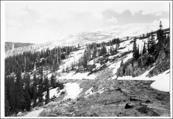
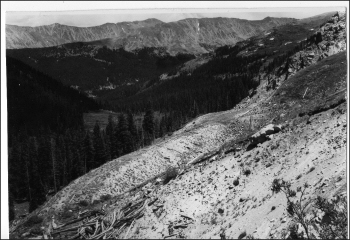
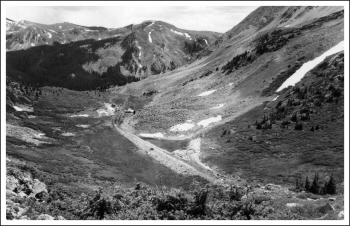
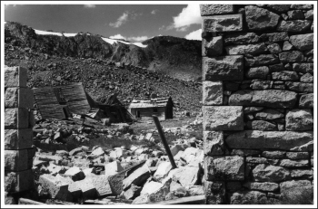
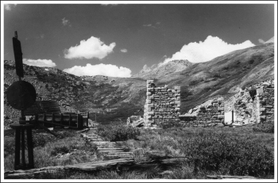
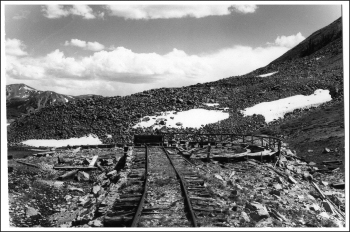

|
|
| Lew Schneider was stationed at Ft Carson. Lew and a friend (non railroad fan) drove up the DSP&P ROW to Hancock, then walked over the ROW to the east end of Alpine Tunnel. They made two trips on June 8 and June 29, 1958. They climbed over the top and came down near the West Portal. They walked to the engine house and toward the curve but never made it to the Palisades. Thanks for sharing your photos with everyone Lew! |
|
 |
 |
||
| First trip to Alpine Tunnel June 8, 1958. Snow prevented us from climbing over the pass. View shows part of the Hancock Alpine Tunnel abandoned right of way | Second trip June 29. Climbing above the East Portal. View shows the South Park line climbing from Hancock to the Tunnel | ||
 Looking back from East Portal Alpine Tunnel
Looking back from East Portal Alpine Tunnel
|
 View from top of Alpine pass looking towards Alpine station and engine house |
||
|
 Alpine boarding house and station |
 Ruins of the Alpine engine house. Compare with the painting on the cover of Pictorial Supplement Denver South Park and Pacific. |


|
 Turntable at Alpine |

|
|
Ray Rossman - U.S. Forest Service
This Web page is maintained and hosted by: Mark L. Evans
and is a service of The Narrow Gauge Circle
All original materials, text, and digital images Copyright 1995-2017
Alpine Tunnel historic Association
All rights reserved.